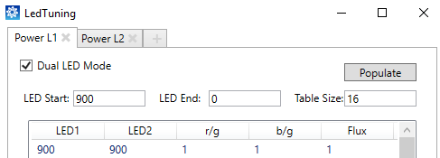
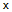
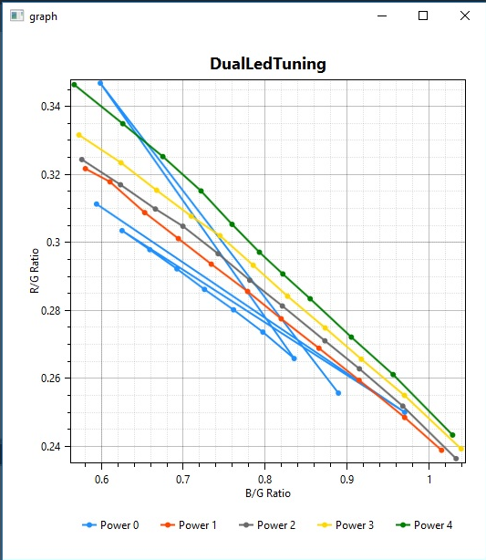

Flash is sometimes needed for low-light settings or as a flash-fill to
remove harsh shadows.
When using flash, a color temperature (CT) mismatch between the flash and
ambient light can cause the following problems:
- Mixing scene and LED CT compromises image quality
- With a single LED, the CT of the flash is fixed at a single
value
- The LED is often a cool light which is a poor choice for
portraits
- Images with mismatched CT illuminants will appear to have a
color cast
These problems can be addressed with the use of a dual LED that allows
for variations in the flash CT. Select an appropriate pair of LEDs and then tune
them to achieve good results.
Prerequisite: Ensure that the battery is fully charged before performing this
procedure. As described in PM8952/PM8956 + PMI8952 Power
Management IC Design Guidelines/Training Slides (80-NT390-5), flash
current is derated beyond a certain threshold at lower battery levels, resulting in
lower intensity flash and thus degraded image quality. Work with the QTI PMIC team
to understand the device behavior, assess the image quality impact, and determine
whether to allow flash below a certain battery level.
-
Select to load the project file. The dual LED tuning parameters in the
project are the values from a prior tuning session or the default values.
-
Tune LSC for dual LED flash (refer to Tune LSC for LED
flash).
-
Connect the device to Chromatix.
-
Set up the test environment to capture snapshots of an 18% gray
chart in complete darkness.
This is to measure the LED flash level without interference
from any other light source.
-
Determine the main flash (snapshot) and preflash current levels
for the LEDs from the flash driver code.
Typically, the preflash value is 20% of the main flash value.
For instance, if the main flash is 900 mA, the preflash is 180 mA.
-
Select to open the Led Tuning
dialog box. For a dual LED project, ensure that the Dual LED Mode check box is marked.

-
Determine how many power levels are required and add or delete
tabs as needed.
-
Click to add a tab.
-
Click  to remove a tab.
Use one power level tab for single LED. A maximum of
six tabs and a minimum of two tabs is allowed for dual LED.
Tuning additional power levels improves the accuracy
of the flux calculation when the derating feature is enabled for the
project. It is recommended to equally space power levels and use a
minimum of two tabs when the derating feature is enabled.
The power level numbering starts at zero, which is
always reserved for preflash (the minimum driving current). The last
power level is always reserved for full power flash (the main flash with
no derating with a maximum drive current).
Intermediary power levels must be between the preflash
and main flash power levels. For example, if the preflash is 180 mA and
the main flash is 900 mA, then the intermediary power level must be
between 180 mA and 900 mA. It is expected that the power (i.e., the sum
of LED1 + LED2) will increase monotonically with the following power
level tab index:
(LED1 + LED2)N-1 < (LED1 + LED2) N < (LED1 +
LED2) N+1, where N is the tab index.
-
Determine how many LED mix combinations are required.
- For single LED flash, only one mix is allowed and no additional lines can
be added to the LED table.
- For dual LED flash, a minimum of 2 mix settings and a maximum of 16 mix
settings is allowed. It is recommended to use a minimum of 11 mix
settings because measurements of the LED mix in the r/g b/g space do not
follow a straight line.
-
For each power level tab, do the following:
-
Enter the appropriate value in the LED Start field. For Power L0, enter
the preflash driving current for dual LED or enter the main driving
current for single LED, as noted in step 10. For subsequent power level
tabs, use the intermediary driving current value.
-
In the LED End
field, enter 0 or the minimum preferred driving current.
It is recommended to use a value of 0 so only one LED
is enabled. The total power level is the sum of the LED1 and LED2
currents.
-
In the Table Size field, enter
the value determined in step 13.
-
Click Populate to
generate the mix rows.Table
Size
TableMix rows are added to the table. Ratios r/g and b/g and the
flux should be marked as 1.
Due to rounding issues, ensure the values of LED1 and LED2
are switched for the first and last mix rows. For example, if LED1 is 1000 and
LED2 is 0 in the first row, in the last row, LED1 must be 0 and LED2 must be
1000. The rounding issue occurs when the power value is not a round multiple of
the table size minus 1. For example, there are no issues if the power is 1000
and the table size is 11, as 1000/(11-1) = 100.
The sum of LED1 and LED2 values must remain constant within
one table. LED1 values increase down the table rows, while LED2 values increase
proportionally.
-
Click Calibrate. The
tool parses the project data and prompts the user to launch the Camera Preview.
The prompt window closes automatically once LEDTuningData.csv is ready, please
do not click OK.
- If a "Csv file does not exist" message appears, the calibration failed.
Navigate to /data/misc/camera/ on
the device to verify that the .csv file is not there. If it is missing,
ensure the device works in flash mode, then repeat this step.
- The tool launches the tuning sequence on the target.
- The target iterates through entries inside the LED tuning table and
measures r/g ratio, b/g ratio, and flux for each entry (for example,
each mix in each power level).
- Upon successful tuning the target creates an LEDTuningData.csv in
/data/misc/camera.
- The tool creates the flash.xml file and a binary file,
and updates the LED Tuning dialog
box.
-
Respond to the prompt that asks if the binary file should be pushed to the
device.
-
To generate a graph that visualizes the r/g b/g data in the
LedTuning tabs, click the Graph Plot
button. Each power level is plotted as a separate line. The x axis is b/g ratio
and the vertical axis is r/g ratio.

The r/g and b/g value should either increase monotonically or decrease
monotonically. Looking at the graph plot is a quick way to verify this. If, for
a given point, there is a plateau or even a reversion in trend, it is important
to adjust the value manually in the table. It is also recommended to follow up
with an investigation into why the values are not monotonic. It has been
observed that the LED driver may cause the LED power to not increase/decrease
monotonically. See that phenomenon in the example plot where, for power level 0,
the LED mix indices 1 and 9 were not powered properly, causing the r/g and b/g
measurements to jump abruptly.